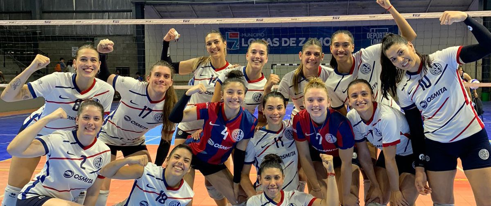
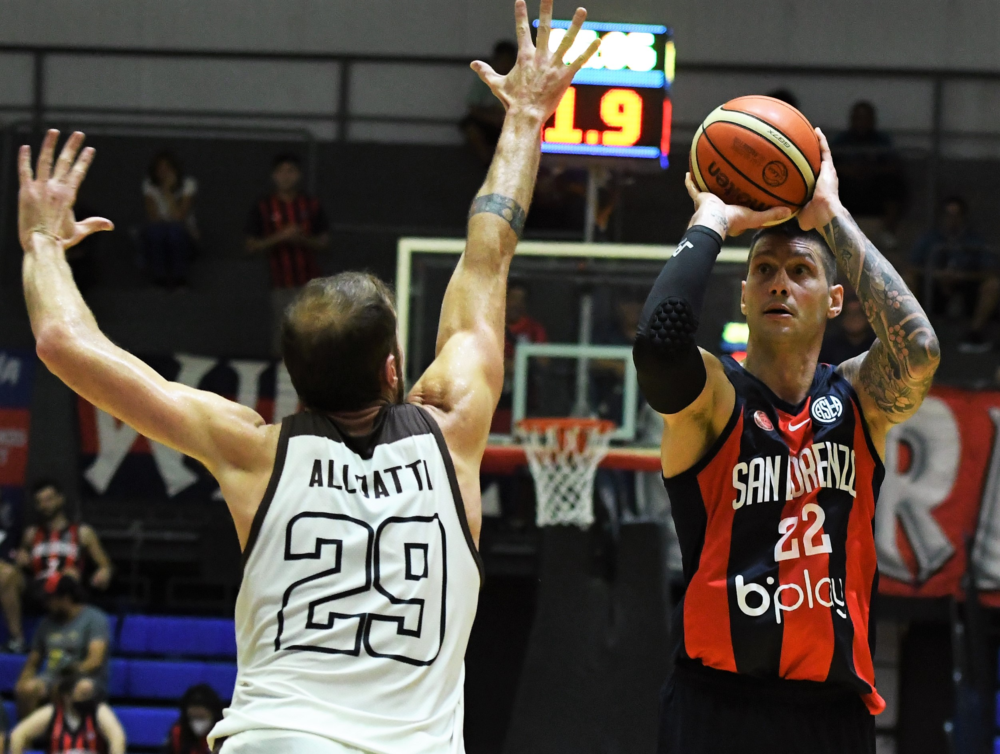

De pronto, los cimientos de Boedo se conmovieron. Fue un grito, un desahogo, y un sismo de felicidad que se extendió desde el barrio hacia todo el mundo. Damián Stazzone (ese símbolo del sanlorencismo más puro) acababa de convertir el tercer gol y sólo quedaban nueve segundos en el reloj. Era el 3-1 definitivo, el que sellaba el partido ante Boca Juniors y el que clausuraba la serie. ¡San Lorenzo campeón del Torneo de AFA de Futsal! Y ante un rival de semejante calibre, en un Pando repleto, estallado de amor por los colores azulgranas, ya deseoso de consumir las últimas centésimas y empezar a celebrar.
5to título para el club

GANARON LAS MATADORAS
Las Matadoras comenzaron la Liga Argentina con un gran triunfo por 3-0 ante San José en Entre Ríos. Con determinación desde el comienzo, el equipo conducido por Mario Gallego peleó cada uno de los puntos en el primer set y sobre el final logró cerrarlo por 25-20. En el siguiente chico, con eficacia y seguridad en cada uno de los saques y con una buena defensa, las Cuervas se impusieron por 25-17.
Siguen arriba las matadoras

LUCHÓ HASTA EL FINAL
El Ciclón volvió a jugar en Boedo tras la importante victoria del sábado ante San Martín de Corrientes. Anoche el rival fue Instituto, el actual campeón del certamen. San Lorenzo estuvo a la altura, salvo en el inicio, donde los cordobeses dominaron y aprovecharon la escasa efectividad azulgrana.
Durante los primeros 10 minutos, el rival dominó y sacó 16 de distancia, pero el local se recuperó y en el segundo período equiparó las acciones, aunque no logró mejorar la puntería. San Lorenzo finalizó sin triples, tras quince intentos, en el primer tiempo (50-73).